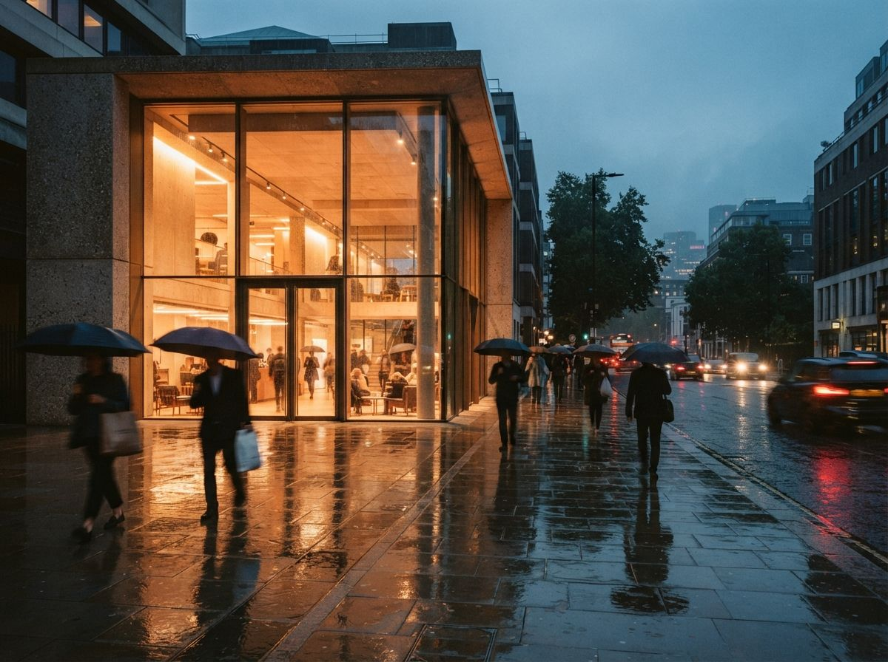

The number showed up four times in one morning's sweep. AI Magicx says AI is cutting architectural render times by 60 to 80 percent. Vibe3D says the right solution can reduce production time by 60 to 80 percent while improving quality. A DhiWise case study says a boutique interior studio cut its rendering time by 80 percent. Visoid says an iterative AI workflow can cut visualization times by over 80 percent. Same two digits, four framings, no shared method underneath any of them.
When a statistic lands on the same figure across four unrelated blogs, that is not four measurements agreeing. It is one number being copied until it feels like a fact. So this is an audit of a percentage, because the percentage is going to end up in a capacity plan or a fee conversation, and it is not built to survive either.
The number has no home
Every one of those four pages states the figure and moves on. None gives a baseline. None names the phase of work. None says whether the clock started when the model was ready or when the brief landed, and none says whether it stopped at the first generation or at the image a client actually approved. The saving is quoted as a property of the tool. It is not. It is a property of a comparison, and the comparison is missing.
This matters because the word doing the heavy lifting is not AI and it is not 80. It is render time, and that phrase covers two things that differ by two orders of magnitude.
What a render time actually is
Ask two architects what their render time is and you get two answers. One means the seconds a GPU spends turning a prepared scene into one finished image. The other means the whole span from a model that is ready to draw to an image that is ready to send, revisions included.
AI collapses the first of those dramatically. It barely touches the second, because the second is mostly you. Framing the view. Writing the prompt, then rewriting it. Generating six and throwing away five. Fixing the handrail the model invented. Matching this image to the other three in the set so the scheme looks like one building. A tool that turns a forty-second engine render into a four-second generation has cut render time by 90 percent in the first sense and cut your afternoon by nothing in the second.
The saving is real. It just lives in the cheapest step of the job.
This is the same confusion we flagged when a PNG round trip quietly eats the time a fast generator just handed back. The generation got quicker. The path around it did not, and the path is where the hours are.
The one source that shows its work
There was a fifth version of the claim, and it was the honest one. Illustrarch cites the 2024 Autodesk State of Design and Make report and gives absolute numbers: AI-assisted rendering brings image generation from two to four hours down to under ten minutes for comparable concept-phase output.
That is better journalism than the percentages, for three reasons. It names the phase, concept. It names the constraint, comparable output. And it gives figures you can sanity-check against your own week instead of a bare ratio you cannot. It is also much narrower than the headline it feeds. It is a statement about concept-phase image generation, not about construction-ready visuals, and the word comparable is quietly load-bearing. A concept massing image and a diffusion render are comparable in a pitch and not comparable in a planning submission. The two-to-four-hours figure is real and it does not generalize past the concept stage where it was measured.
What each source measured, side by side
| Source | Figure | What it seems to measure | What it leaves out |
|---|---|---|---|
| AI Magicx | 60 to 80% | unspecified render times | baseline, phase, cleanup |
| Vibe3D | 60 to 80% | production time | which production step |
| DhiWise | 80% | one studio's rendering | a sample size of one |
| Visoid | over 80% | visualization times | the manual iteration loop |
| Illustrarch / Autodesk | 2 to 4h to under 10m | concept-phase image gen | everything after concept |
Read down the last column. Four of the five leave out the exact thing that decides whether the saving reaches your invoices. The fifth tells you it measured only the front of the project. That is the whole story of this number in one table.

How to get a figure that is yours
The only render-time saving worth acting on is the one you pull from your own last three projects, and it takes an afternoon to produce.
Pick a real view from a recent job, not a demo scene. Reconstruct the old path from your file history and time it end to end, model-ready to approved image, revisions counted. Run the same view through the AI path and time it the same honest way, including the generations you discarded and the cleanup you did in Photoshop. Divide. The number that falls out has your denominator inside it, which is the only denominator that pays your staff. Our benchmark protocol keeps that comparison fair, and the trial credit plan keeps you from burning a free tier finding it out.
One thing to expect when you do this. The honest saving usually does not show up as 80 percent off one image. It shows up as more options explored per hour, which is a different benefit and often a better one. The time you save on the render tends to get spent on more iterations, not fewer, which is why the hours rarely land in the bank the way the percentage implies. We have made that case before: faster is not the same as more profitable, and the two get confused constantly.
Our take
The 60 to 80 figure is not a lie. It is a true statement about the cheapest step in the chain, sold as though it described the chain. Believe it about generation. Do not put it in a capacity model or a fee proposal, because the hours it promises are hiding in the framing, the prompting, the culling and the cleanup that none of these pages counted. This is the same pattern behind most tidy review numbers: a real measurement of a small thing, dressed as a measurement of the whole.
When a client or a partner asks whether AI will cut your render time by 80 percent, the useful reply is not yes and it is not no. It is a question back. Eighty percent of what, measured from where to where, and who timed it.
The percentage is real. The hours are yours to actually count.
Written from the 23 July 2026 intel sweep. Figures are as published by AI Magicx, Vibe3D, DhiWise, Visoid and illustrarch and captured on 23 July 2026; the two-to-four-hours comparison is attributed by illustrarch to the 2024 Autodesk State of Design and Make report. Percentages are reported as published and were not independently reproduced. ArchiGen AI carries no sponsored placements and has no commercial relationship with the tools named.